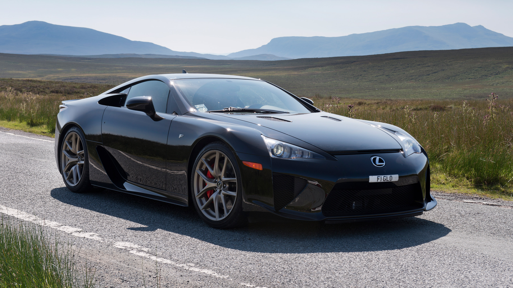

No início dos anos 2000, começa o "LFA Programme", um projeto de estimação da Toyota que, assim como outros projetos do tipo, não dariam lucros significativos para a empresa, mas, em compensação, trariam um carro muito interessante à vida. Já em 2001, a Lexus, subdivisao de carros de luxo da Toyota, tinha uma lista com 500 características fundamentais que o supercarro deveria ter e, ao longo de 10 anos, seus engenheiros foram aperfiçoando cada vez mais o protótipo que resultaria no Lexus LFA, um carro com um motor V10 que era menor que um V8 e possuia peso similar a um V6 e que emite o melhor som já emitido por um motor à combustão. Apesar do fracasso de vendas, o Lexus LFA é, até hoje, o maior símbolo japonês da busca e execução da perfeição automobilística, refinada ao longo de anos até atingir seu ápice.